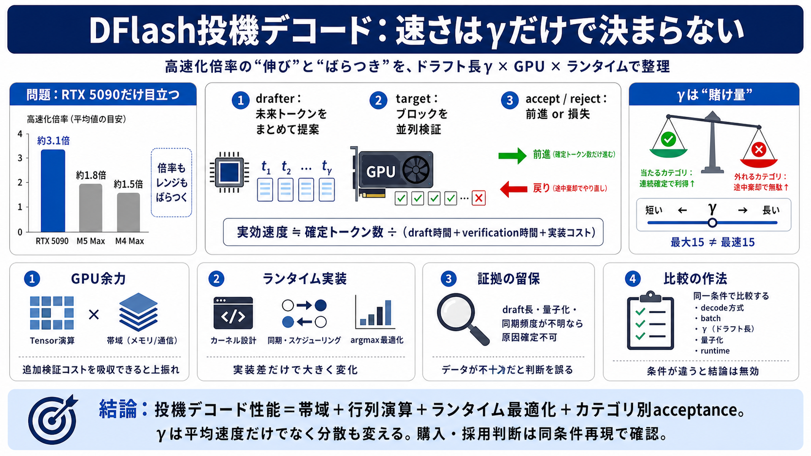

Muse-Glimmer 30B Hits ~280 t/s in Real Production Coding : r/LocalLLaMA
Skip to main contentMuse-Glimmer 30B Hits ~280 t/s in Real Production Coding : r/LocalLLaMA Open menu Open navigation. …

drafter が複数トークンを先読み提案
ターゲット が提案ブロックを並列検証
accept / reject に応じて前進・損失が発生
当たるカテゴリ：多トークン連続で確定しやすい
外れるカテゴリ：途中棄却で検証した分が無駄になりやすい
提案ブロックの“長さの可能性”
提案→検証→棄却→次ステップまで含む実効コストの最小点
greedy 等のデコード方式、batch size、tok/s指標
draft/block長（γ相当）、量子化方式、ランタイム（例：llama.cpp / ExecuTorch）
Skip to main contentMuse-Glimmer 30B Hits ~280 t/s in Real Production Coding : r/LocalLLaMA Open menu Open navigation. …
| Hardware | Base Speed (tok/s) | With DFlash (tok/s) | Speedup | Framework | --- --- | Nvidia RTX 5090 | 74.9 | 233.…
50.00 t/s VRAM: 19.34 GB (I hit 130k context on pristine, unquantized f16 cache and still had 4.5 GB of VRAM left over. …
--- meta: title: Speculative decoding description: Accelerate Muse Glimmer inference with DFlash speculative decoding on…
``` srv update_slots: spec cycle (1 slots): draft=275ms verify=1521ms accept=60ms other=0.0ms total=1858ms ``` Verify …